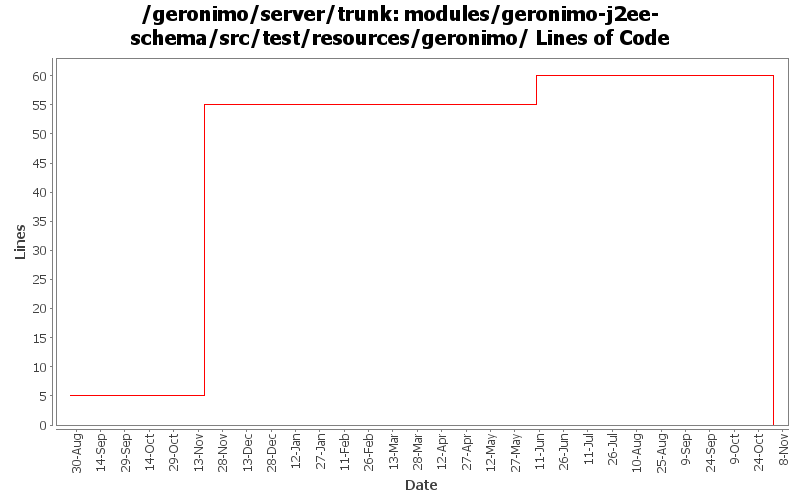

[root]/modules/geronimo-j2ee-schema/src/test/resources/geronimo

| Author | Changes | Lines of Code | Lines per Change |
|---|---|---|---|
| Totals | 43 (100.0%) | 62 (100.0%) | 1.4 |
| kevan | 21 (48.8%) | 50 (80.6%) | 2.3 |
| djencks | 5 (11.6%) | 11 (17.7%) | 2.2 |
| vamsic007 | 1 (2.3%) | 1 (1.6%) | 1.0 |
| prasad | 12 (27.9%) | 0 (0.0%) | 0.0 |
| jdillon | 4 (9.3%) | 0 (0.0%) | 0.0 |
GERONIMO-3565. Modules distributed amongst framework/modules and plugins
0 lines of code changed in 12 files:
GERONIMO-2964 Cannot specify the Tomcat work directory for a web application
o Renamed the schemas that changed
1 lines of code changed in 1 file:
GERONIMO-2286 GERONIMO-1874 GERONIMO-3140 Adjust schema versions for schemas importing new schema versions
1 lines of code changed in 1 file:
GERONIMO-2687. Don't construct default and run-as subjects, get them from a login module. Also creates a separate server-security-config for the security config stuff you probably want to change. Also fixes lots of security problems, including mdb run-as handling.
10 lines of code changed in 2 files:
GERONIMO-2537 Integrating patch supplied by Jay McHugh. Thanks Jaymvn -Ptools geronimo:start! Adds apache src header to files that were missing appropriate license information. This is everything except applications/console.
50 lines of code changed in 21 files:
GERONIMO-2447 use new openejb namespaces
0 lines of code changed in 2 files:
Apply standard properties
0 lines of code changed in 4 files: